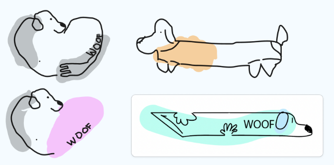
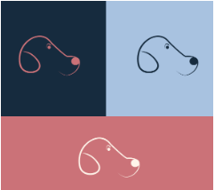
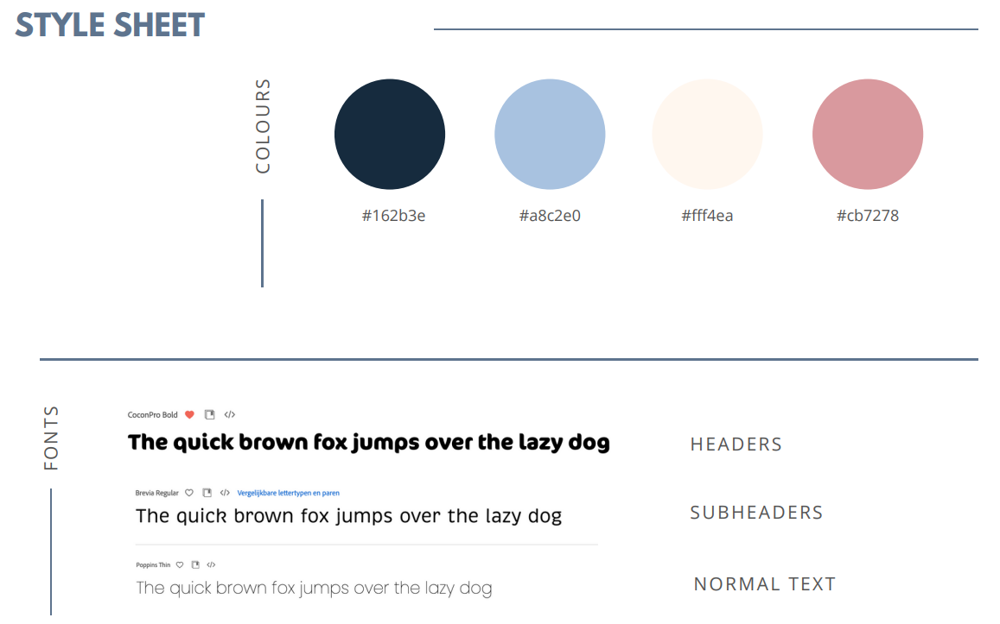

General Information
This branded website is publicly available at grittynl.github.io/gritty/
This website was created by…
- Urte Jonaviciute (ID: 231077)
- Tereza Bugarova (ID: 235491)
- Fenne van den Oever (ID: 230798)
- Guus de Beer (ID: 235045)
Content
Brand Name & Logo
We decided to call our back brace brand Gritty since it perfectly captures the distinct personality of dachshunds. Despite their diminutive stature, dachshunds are courageous, tenacious, full of attitude; they face challenges head-on and never back down. This is the attitude that we want to capture in our brand. This type of perseverance is frequently referred to as “grit”- the ability to persevere in the face of adversity by combining courage, passion, and resilience. Grit is defined as bravery and courage
We started by thinking of what could make the logo define the brand. We all came to a consensus that we wanted some kind of resemblance of a dachshund. We also thought about adding an element to represent care which led us to trying out adding hands or hearts. Here are our first sketches:
After solidifying our final colour palette based on our marketing research, we went on to develop better quality drafts of our logo. We decided to keep going with the heart-shaped logo as we felt it was the most unique and represented our values best.

We also wanted to use a brand mark for smaller applications (apps, garments etc):
After some feedback from the team, we decided to choose the first version of the primary logo but make the colour swatches smoother since the texture seemed like a mistake.Here are the final versions of the logo, secondary logo and brand mark:

Vision
In a world where dachshunds are part of families, we believe this caring goes beyond the basic necessities like taking a walk, serving food and petting. In a perfect world everyone can give back the unconditional love they receive from their dog.
Mission
Through thoughtful design and lively expression, we aim to provide a solution for your devoted friend.
Values
Please clarify here the match between students and pieces of content. Make sure that you provide a link to the correct page within the website
| # | Student ID | Value | Name and link of content |
|---|---|---|---|
| 1. | 231077 | Trusted Support | Value: trusted support |
| 2. | 235491 | Lively Expression | Value: lively expression |
| 3. | 230798 | Proactive Care | Value: proactive care |
| 4. | 235045 | Devoted Friendship | Value: devoted friendship |
Visual Identity
Colours: We essentially chose the colours blue and orange. Blue stands for reliability and high quality and orange for excitement. After evaluating our target group and marketing tactics we were turning more towards female preference that is why we changed orange to pink. This enlightens the more feminine side. We used the split complementary theory because of the contrast that creates a boldness that separates us from competitors.
Colour palette:
Stylesheet: 
Typography:
Supporting visuals:
Production
Design Elements
Please provide a list of design elements alongside their justifications:
-
A colour scheme (with HTML colour codes, which must be consistent with your final website)
— see the example below from the BUas brand book:
- #EE7622 The orange colour refers to the Dutch identity and the city of Breda (Oranjestad). Orange stands for…
- #00406B Dark blue signifies…
- Font choices
- User interface patterns (e.g. grids, carousels, menu organizations etc.)
- The structure of the navigation and content (e.g. how content units are distributed across pages)
- All these elements must be justified by referring to the theory and/or vocabulary of design
- Please relate these elements to other units, for example:
- How does website design fit the values and personality of the brand?
- How does website design fit the marketing and communication strategy?
- How does website design help showcase the unique value proposal of the product?
Credits
Please provide links and/or credits for third-party elements including:
- HTML templates if these are different from this one (buas-media-interactive/prj4-group-template)
- The source code for UX patterns other than the ones provided by the “Bootstrap” library (see getbootstrap.com/docs for a list of such patterns)
- Images that were not produced by students themselves, including when crediting is not mandatory (in other words, we ask you to credit Unsplash images)
Testing Report
Please write about…
- Your testing goals – in other words, what you are trying to learn about your website?
- Your testing methods, which includes information about:
- The test’s participants (number, match with target audience, etc.)
- The test’s setting (which material is used, is it done remotely, on campus, at home, etc.)
- The test’s protocol (what instructions are given, how it is recorded, etc.)
- Your testing results, which includes information about:
- Positive and negative aspects of the UI/UX that have been identified, ranked by importance.
- Improvements that have been implemented on the final website (or that would be implemented if doing so would be too complex)
Marketing
Context of campaign and promotional activities
Explain the context of the campaign is (What the campaign is about, what the message is, which promotional activities were executed). In addition, present the objectives as mentioned in the Communication & Media Plan.
Explain and justify the chosen channels/platforms used and show there is a solid connection to the objectives established in the Communication & Media Plan.
Learning Points
Identify and justify your learning point (based on the Communication & Media Plan). What did you learn during the duration of the project concerning the campaign? What worked and what didn’t? What went as expected and what didn’t? What would you do differently? Reflect on the past work and describe what you learned.
Future Planning
Reflection on what has been done and describe in detail what you would do if the project would continue.
Describe in detail your future recommendations if the campaign would be continued.
Detail and describe clearly the process of what your would do differently based on you experience on this project related to the marketing assignment.
Professionalism
Present and organize below all social media/online activities of the campaign. Context and material are according to the brand style, image, and vision. Images on the site are of high-quality, readable, and properly designed.

Management
Lean Canvas
Fill in at least 2 bullet points per building block and according to the rubrics.
Problem
- List your top 3 problems you solve for your target group(s).
- Describe briefly how the problems are solved now (existing alternatives).
Solution
- Outline the brand solution(s) you have for the above problem(s).
Customer segments
- List your target customers and/or users.
- Describe briefly the characteristics of your ideal customer (early adopter, brand persona).
Unique value proposition
- With a single, clear compelling message, state why your brand idea is different and worth paying attention to.
Unfair advantage
- List the aspect(s) of your brand that cannot easily be copied, also called your sustainable competitive advantage(s).
Channels
- List your main path to customers.
- How do you reach them? What channel(s) do you use.
Key metrics
- List the key numbers that tell you how your brand experience is doing.
- For example amount of users, downloads, visitors, subscriptions, sales etc. Numbers you are able to measure.
Revenue streams
- List your sources of revenue: describe the revenue model and the (different) revenue stream(s).
Cost structure
- List your main costs: define the fixed and variable costs.
- Calculate the cost per unit.
Services/products
- State what your product and/or service is and how this contributes to your unique value proposition.
- Clarify the fit between the product/service developed and the brand identity/brand image.
Validation of Assumptions
Write a reflection on the choices made in creating choosing the trademark, including an analysis of the existing alternatives.
Appendix
Please use the list below to provide links to evidence for all parts of your justication. Please double-check all links before delivering the website. Do not hesitate to refer to these numbers above.